Capítulo 14 Evaluación Interactiva: Trigonometría (Ev_Trigo_v1)
14.1 Introducción
Bienvenido a la Evaluación Interactiva: Trigonometría (Ev_Trigo_v1).
Este cuestionario interactivo consta de 40 preguntas autoevaluables en formato de afirmaciones verdaderas y falsas (50% y 50%).
Instrucciones Generales: * Trabaja cada problema con lápiz y papel antes de responder. * Cada pregunta tiene exactamente 6 opciones (3 afirmaciones verdaderas y 3 afirmaciones falsas). Debes seleccionar únicamente las 3 afirmaciones verdaderas para obtener el puntaje completo. * Puedes reintentar las preguntas las veces que lo requieras. * Al completar tu prueba, dirígete a la última sección para obtener tu Reporte Final de Calificación. * ¡Mucho éxito en tu evaluación!
14.2 Bloque 1: Identidades, Ecuaciones y Conceptos Básicos
En esta sección se abordan la demostración de identidades trigonométricas, el despeje de ecuaciones, las notaciones de conversión de grados decimales a DMS, y relaciones en el sector circular e isósceles.
14.2.1 Pregunta 1
14.2.2 Pregunta 2
14.2.3 Pregunta 3
14.2.4 Pregunta 4
14.2.5 Pregunta 5
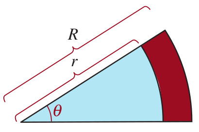
14.2.6 Pregunta 6
14.2.7 Pregunta 7
14.2.8 Pregunta 8
14.2.9 Pregunta 9
14.2.10 Pregunta 10
14.3 Bloque 2: Aplicaciones Prácticas y Triángulos Rectángulos
En esta sección se resuelven problemas prácticos de triángulos rectángulos aplicados al cálculo de alturas de montañas con teodolitos, ángulos óptimos de lanzamientos, e inclinaciones con visuales y puentes levadizos.
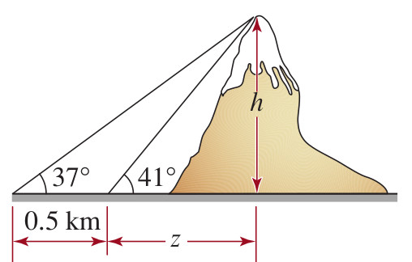
14.3.1 Pregunta 13
14.3.2 Pregunta 14
14.3.3 Pregunta 15
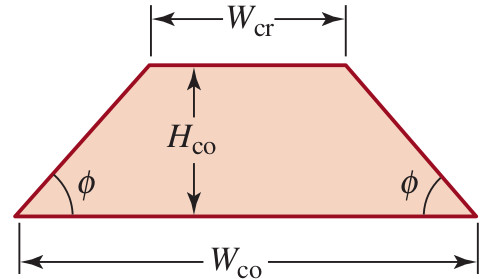
14.3.4 Pregunta 16
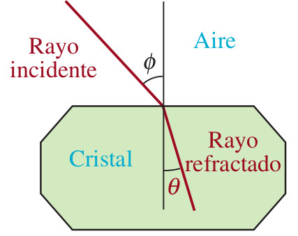
14.3.5 Pregunta 17
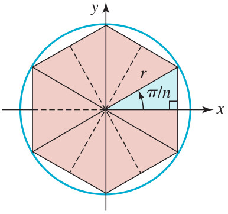
14.3.6 Pregunta 18
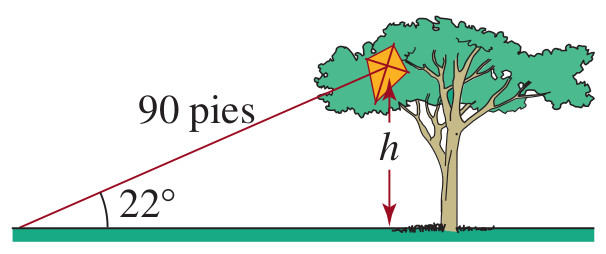
14.3.7 Pregunta 19
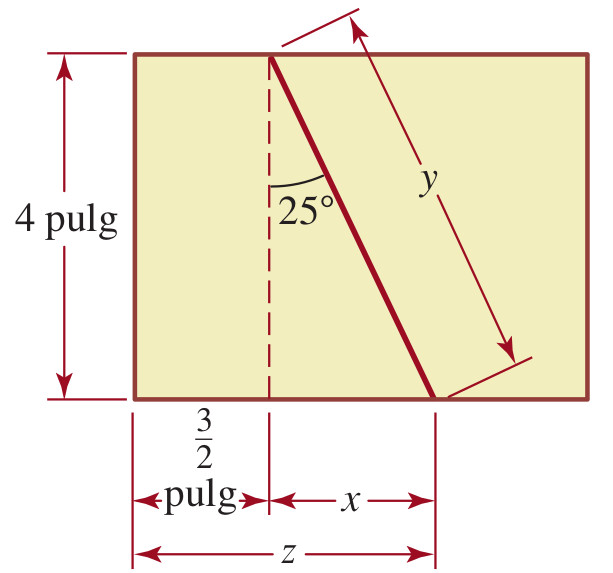
14.3.8 Pregunta 20
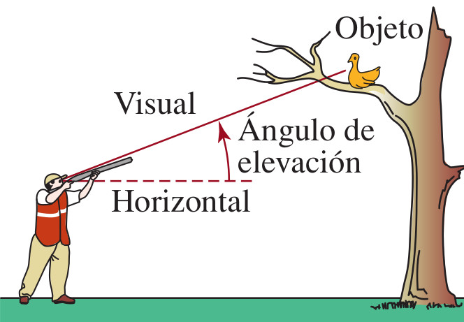
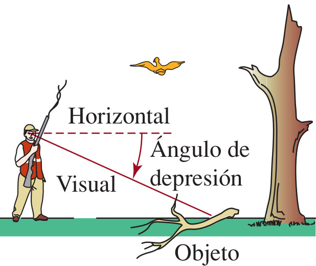
14.3.9 Pregunta 21
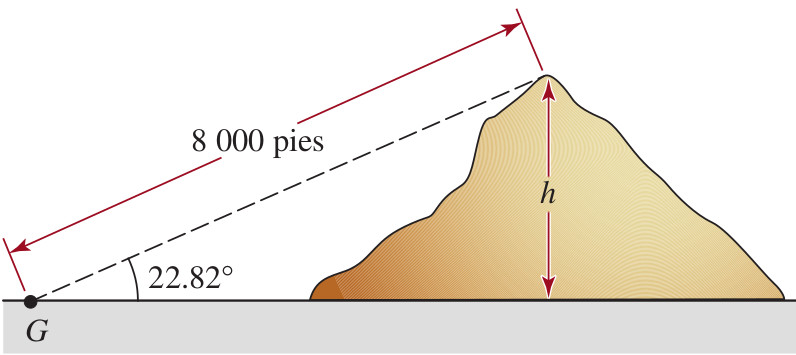
14.3.10 Pregunta 22
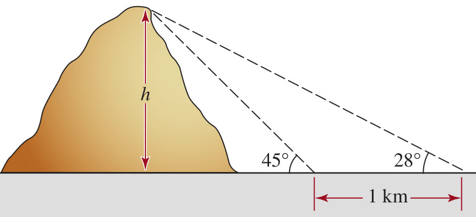
14.3.11 Pregunta 23
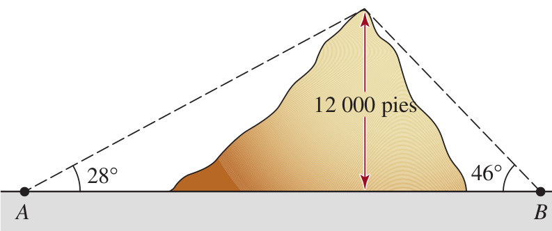
14.3.12 Pregunta 24
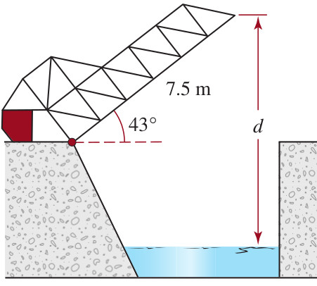
14.3.13 Pregunta 25
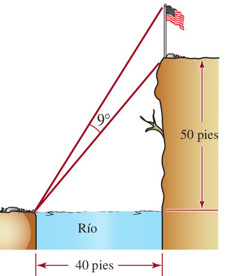
14.3.14 Pregunta 26
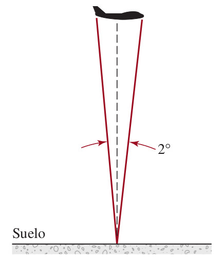
14.3.15 Pregunta 27
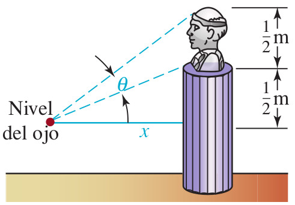
14.4 Bloque 3: Ley de Senos, Cosenos y Modelamiento Trigonométrico
En esta sección se abordan problemas resueltos mediante la ley de senos y cosenos para cañones, navegación de barcos, y modelamiento trigonométrico de pastizales y transporte de tubos por pasillos.
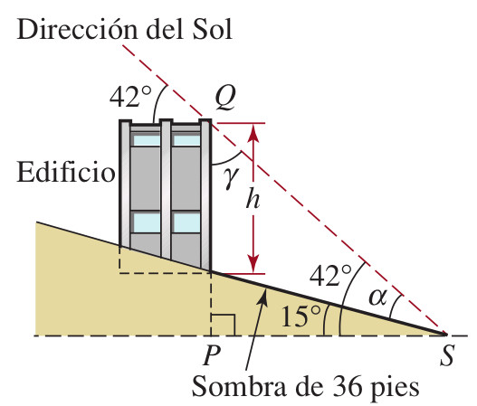
14.4.1 Pregunta 30
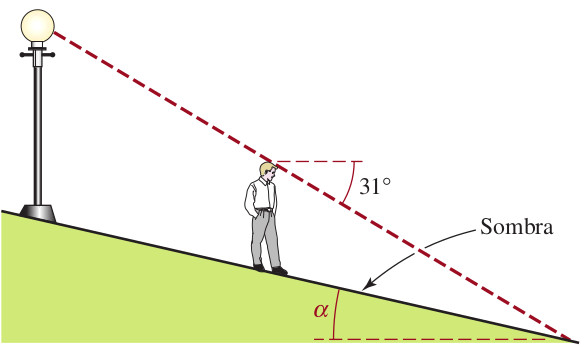
14.4.2 Pregunta 31
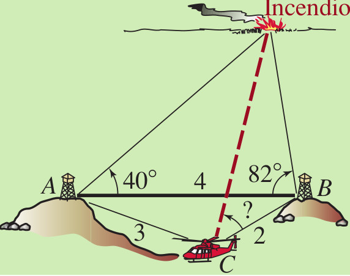
14.4.3 Pregunta 32
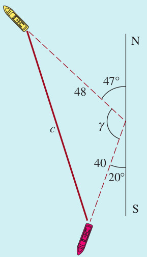
14.4.4 Pregunta 33
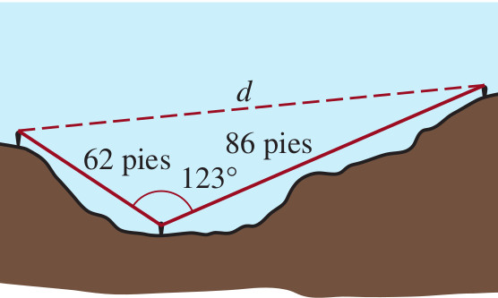
14.4.5 Pregunta 34
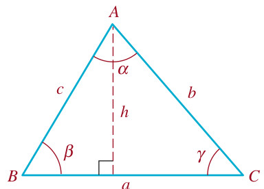
14.4.6 Pregunta 35
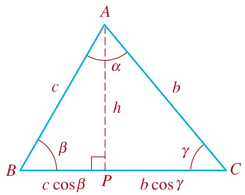
14.4.7 Pregunta 36
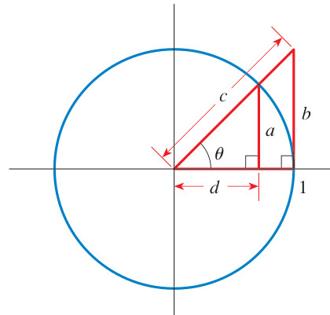
14.4.8 Pregunta 37
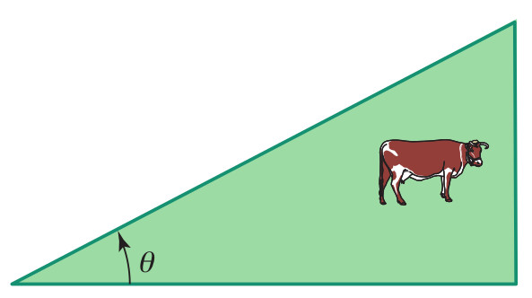
14.4.9 Pregunta 38
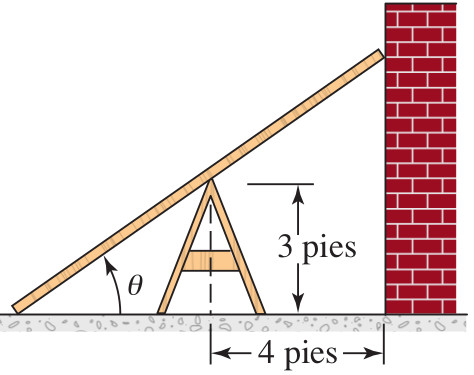